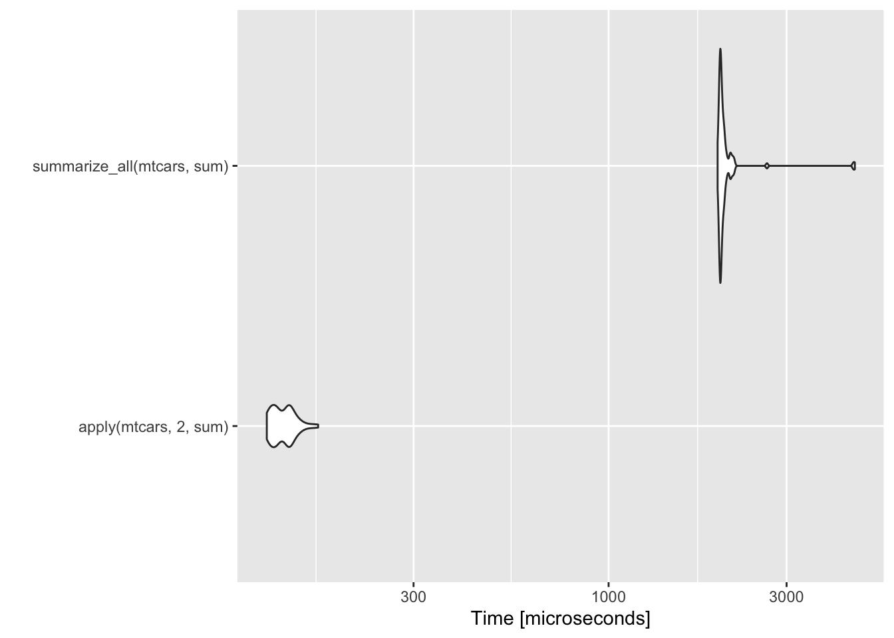
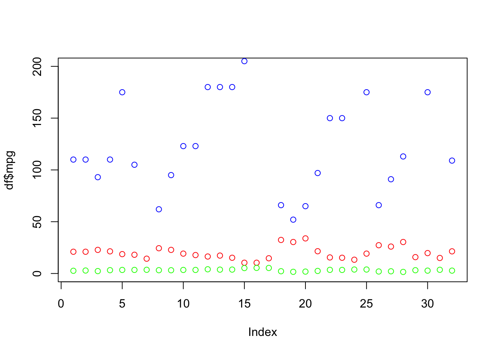
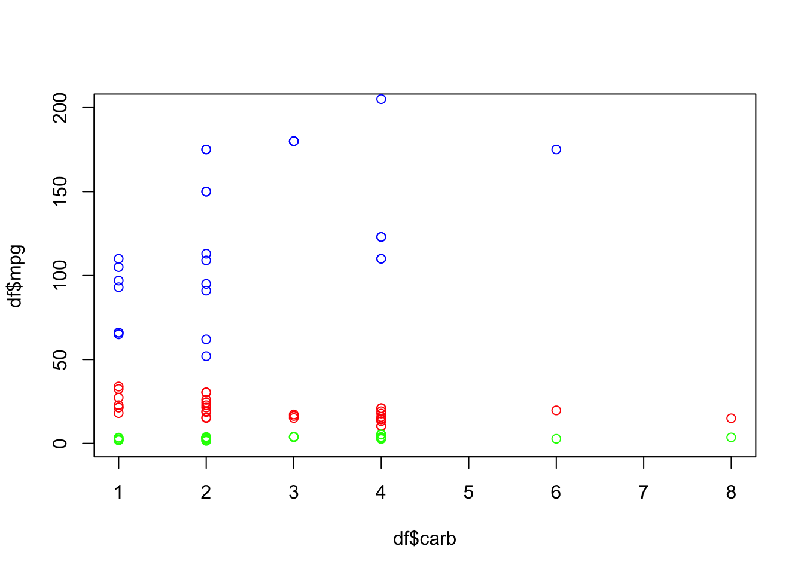
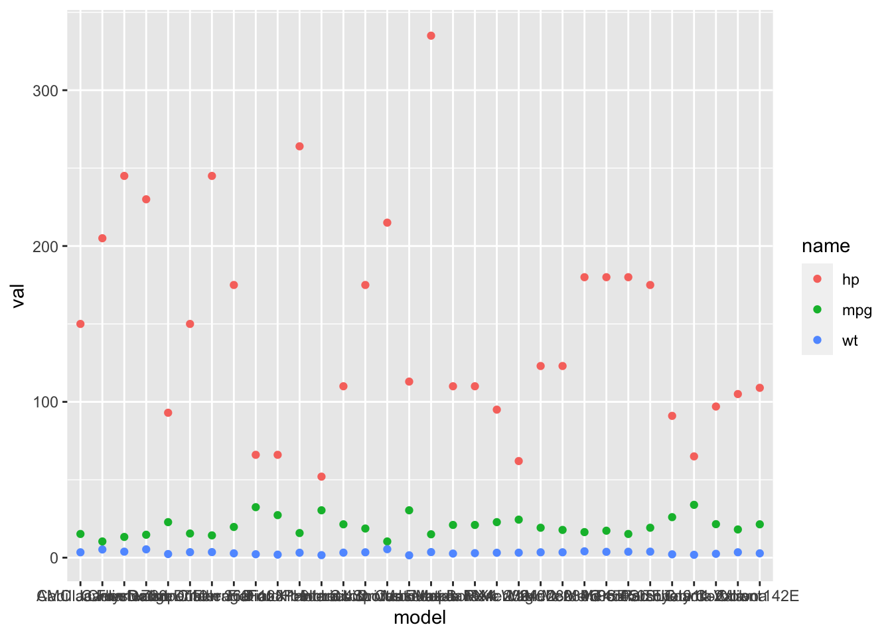
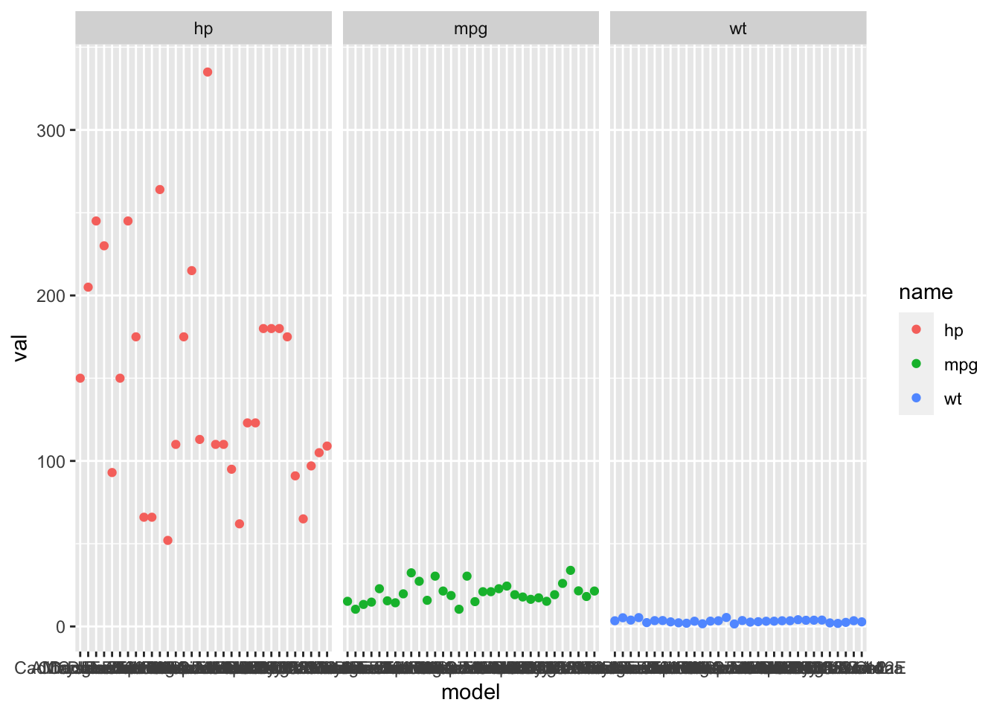
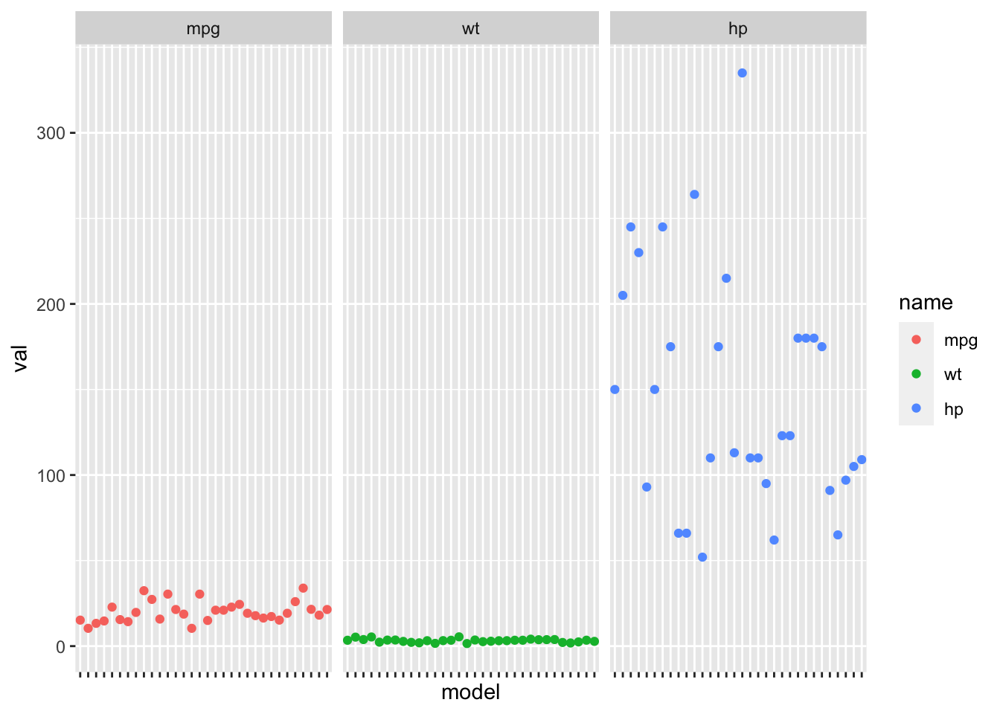

Week 9: Intro to piping and tidyverse data wrangling
This week I will give a brief introduction to piping and data wrangling with tidyr and tidyverse verbs. If you want to learn more, there are many resources on the web. I like this course book as a beginning, this course goes into more depth, and R for Data Science has much more.
Today’s goal is to teach you 6 data “verbs” that are easy to use and that will cover many of your data-wrangling needs.
library(dplyr)
library(tidyr)
library(ggplot2)Piping
You already use the concept of “piping”, but you do it with parentheses. Your pipe in this case goes from inside to outside.
fun4(fun3(fun2(fun1(x))))x is our initial object. We apply fun1() to that. Then that result goes into fun2(). The result of that goes into fun3(). etc. “Pipe” is referring to the flow of information, the “goes into” part.
This has many problems.
- You will lose track of your parentheses and waste much time sorting out where you lost one of your parentheses.
- You are limited in how many levels you can add without your code being unreadable as it stretches quickly to multiple lines.
- We don’t read inside to outside though from our math education, we are used to that (sort of).
Piping is just a different way to write the same thing but left to right like we read (in English).
x %>% fun1() %>% fun2() %>% fun3() %>% fun4()Example:
1:10 %>% sqrt() %>% mean() %>% round(digits=1) ## [1] 2.2That’s the same as
round(mean(sqrt(1:10)),digits=1) ## [1] 2.2Upsides
- It is used a lot in the tidyverse so you should be aware of how it works.
- It works well in the tidyverse.
- Can be more readable.
- Makes it easy to avoid intermediate variables (
tmpandfoo).
Downsides
- It’s is easy to write code that is hard to understand. It tends to hide where the object on the left is going to in the function on the right.
So you see code like this
fun <- function(a=1, b=10){c(max(a), min(b))}
a <- 2:10
a %>% fun(a^2)## [1] 10 4and you have to go research fun to discover that this is fun(a=a, b=a^2).
This kind of mistake is so easy to make. You want say, rnorm(n=a), and accidentally write that in your pipe.
a <- 3
a %>% rnorm(n=a)## [1] 1.792934 3.277429 4.084441a %>% rnorm()## [1] -2.3456977 0.4291247 0.5060559The left flows into the first function spot, UNLESS you specified that and then it flows to the second or third or whatever is “open”.
You can spend hours trying to solve your piping issue when you could immediately write down code using intermediate values.
It’s really slow.
library(microbenchmark)
bm <- microbenchmark(1:10 %>% sqrt() %>% mean() %>% round(digits=1), round(mean(sqrt(1:10)),digits=1) )
ggplot2::autoplot(bm)
- You must stay hyper-alert as to the names in the data frame you are working with. You might not have created this data frame. This may be a function you wrote to take any data frame from a user…. Otherwise, bad things like this can happen.
fun <- function(x, cyl=1){
x %>% transform(new = mpg^cyl) %>% select(mpg, new)
}Works great!
df <- data.frame(mpg=runif(10, 10, 30))
fun(df, cyl=0.5)## mpg new
## 1 16.89275 4.110079
## 2 17.38352 4.169355
## 3 18.58504 4.311037
## 4 28.37029 5.326377
## 5 25.68690 5.068224
## 6 24.75663 4.975604
## 7 15.61545 3.951639
## 8 19.13653 4.374532
## 9 15.75075 3.968722
## 10 23.92582 4.891403Why, why? It didn’t complain but this is wrong!
fun(mtcars[1:5,], cyl=0.5)## mpg new
## Mazda RX4 21.0 8.576612e+07
## Mazda RX4 Wag 21.0 8.576612e+07
## Datsun 710 22.8 2.702336e+05
## Hornet 4 Drive 21.4 9.604674e+07
## Hornet Sportabout 18.7 1.495316e+10Tidyverse verbs
Read up on tidyverse verbs here.
NOTE:
- I am using piping because that is how you will see these verbs used in online material. They are just functions and you do not need to use them with piping.
- They are very slow. For loops are not the place for these functions.
apply()in base R is much faster. - Tidyverse is maturing and the semantics across functions is not quite the same. Careful.
Workflow
data.frame %>%
select columns or filter rows %>%
summarize or mutatedata.frame %>%
group data %>%
summarize or mutateVerbs that we will learn:
select()select columnsfilter()select rowsgroup_by()apply the function differently within groups.summarize()apply function over columns -> fewer rows. Likeapply(df,2,function)mutate()apply function to columns and make new column. Likeapply(df,1,function)
What we won’t learn: applying a function across a group of columns. See ?across to learn about that.
Selecting and filtering
data.frame %>%
select or filterselect()
Select columns.
head(mtcars)## mpg cyl disp hp drat wt qsec vs am gear carb
## Mazda RX4 21.0 6 160 110 3.90 2.620 16.46 0 1 4 4
## Mazda RX4 Wag 21.0 6 160 110 3.90 2.875 17.02 0 1 4 4
## Datsun 710 22.8 4 108 93 3.85 2.320 18.61 1 1 4 1
## Hornet 4 Drive 21.4 6 258 110 3.08 3.215 19.44 1 0 3 1
## Hornet Sportabout 18.7 8 360 175 3.15 3.440 17.02 0 0 3 2
## Valiant 18.1 6 225 105 2.76 3.460 20.22 1 0 3 1mtcars %>% select(mpg)## mpg
## Mazda RX4 21.0
## Mazda RX4 Wag 21.0
## Datsun 710 22.8
## Hornet 4 Drive 21.4
## Hornet Sportabout 18.7
## Valiant 18.1
## Duster 360 14.3
## Merc 240D 24.4
## Merc 230 22.8
## Merc 280 19.2
## Merc 280C 17.8
## Merc 450SE 16.4
## Merc 450SL 17.3
## Merc 450SLC 15.2
## Cadillac Fleetwood 10.4
## Lincoln Continental 10.4
## Chrysler Imperial 14.7
## Fiat 128 32.4
## Honda Civic 30.4
## Toyota Corolla 33.9
## Toyota Corona 21.5
## Dodge Challenger 15.5
## AMC Javelin 15.2
## Camaro Z28 13.3
## Pontiac Firebird 19.2
## Fiat X1-9 27.3
## Porsche 914-2 26.0
## Lotus Europa 30.4
## Ford Pantera L 15.8
## Ferrari Dino 19.7
## Maserati Bora 15.0
## Volvo 142E 21.4mtcars %>% select(-mpg, -qsec, -gear, -cyl)## disp hp drat wt vs am carb
## Mazda RX4 160.0 110 3.90 2.620 0 1 4
## Mazda RX4 Wag 160.0 110 3.90 2.875 0 1 4
## Datsun 710 108.0 93 3.85 2.320 1 1 1
## Hornet 4 Drive 258.0 110 3.08 3.215 1 0 1
## Hornet Sportabout 360.0 175 3.15 3.440 0 0 2
## Valiant 225.0 105 2.76 3.460 1 0 1
## Duster 360 360.0 245 3.21 3.570 0 0 4
## Merc 240D 146.7 62 3.69 3.190 1 0 2
## Merc 230 140.8 95 3.92 3.150 1 0 2
## Merc 280 167.6 123 3.92 3.440 1 0 4
## Merc 280C 167.6 123 3.92 3.440 1 0 4
## Merc 450SE 275.8 180 3.07 4.070 0 0 3
## Merc 450SL 275.8 180 3.07 3.730 0 0 3
## Merc 450SLC 275.8 180 3.07 3.780 0 0 3
## Cadillac Fleetwood 472.0 205 2.93 5.250 0 0 4
## Lincoln Continental 460.0 215 3.00 5.424 0 0 4
## Chrysler Imperial 440.0 230 3.23 5.345 0 0 4
## Fiat 128 78.7 66 4.08 2.200 1 1 1
## Honda Civic 75.7 52 4.93 1.615 1 1 2
## Toyota Corolla 71.1 65 4.22 1.835 1 1 1
## Toyota Corona 120.1 97 3.70 2.465 1 0 1
## Dodge Challenger 318.0 150 2.76 3.520 0 0 2
## AMC Javelin 304.0 150 3.15 3.435 0 0 2
## Camaro Z28 350.0 245 3.73 3.840 0 0 4
## Pontiac Firebird 400.0 175 3.08 3.845 0 0 2
## Fiat X1-9 79.0 66 4.08 1.935 1 1 1
## Porsche 914-2 120.3 91 4.43 2.140 0 1 2
## Lotus Europa 95.1 113 3.77 1.513 1 1 2
## Ford Pantera L 351.0 264 4.22 3.170 0 1 4
## Ferrari Dino 145.0 175 3.62 2.770 0 1 6
## Maserati Bora 301.0 335 3.54 3.570 0 1 8
## Volvo 142E 121.0 109 4.11 2.780 1 1 2mtcars %>% select(disp:qsec)## disp hp drat wt qsec
## Mazda RX4 160.0 110 3.90 2.620 16.46
## Mazda RX4 Wag 160.0 110 3.90 2.875 17.02
## Datsun 710 108.0 93 3.85 2.320 18.61
## Hornet 4 Drive 258.0 110 3.08 3.215 19.44
## Hornet Sportabout 360.0 175 3.15 3.440 17.02
## Valiant 225.0 105 2.76 3.460 20.22
## Duster 360 360.0 245 3.21 3.570 15.84
## Merc 240D 146.7 62 3.69 3.190 20.00
## Merc 230 140.8 95 3.92 3.150 22.90
## Merc 280 167.6 123 3.92 3.440 18.30
## Merc 280C 167.6 123 3.92 3.440 18.90
## Merc 450SE 275.8 180 3.07 4.070 17.40
## Merc 450SL 275.8 180 3.07 3.730 17.60
## Merc 450SLC 275.8 180 3.07 3.780 18.00
## Cadillac Fleetwood 472.0 205 2.93 5.250 17.98
## Lincoln Continental 460.0 215 3.00 5.424 17.82
## Chrysler Imperial 440.0 230 3.23 5.345 17.42
## Fiat 128 78.7 66 4.08 2.200 19.47
## Honda Civic 75.7 52 4.93 1.615 18.52
## Toyota Corolla 71.1 65 4.22 1.835 19.90
## Toyota Corona 120.1 97 3.70 2.465 20.01
## Dodge Challenger 318.0 150 2.76 3.520 16.87
## AMC Javelin 304.0 150 3.15 3.435 17.30
## Camaro Z28 350.0 245 3.73 3.840 15.41
## Pontiac Firebird 400.0 175 3.08 3.845 17.05
## Fiat X1-9 79.0 66 4.08 1.935 18.90
## Porsche 914-2 120.3 91 4.43 2.140 16.70
## Lotus Europa 95.1 113 3.77 1.513 16.90
## Ford Pantera L 351.0 264 4.22 3.170 14.50
## Ferrari Dino 145.0 175 3.62 2.770 15.50
## Maserati Bora 301.0 335 3.54 3.570 14.60
## Volvo 142E 121.0 109 4.11 2.780 18.60mtcars %>% select(!disp:qsec)## mpg cyl vs am gear carb
## Mazda RX4 21.0 6 0 1 4 4
## Mazda RX4 Wag 21.0 6 0 1 4 4
## Datsun 710 22.8 4 1 1 4 1
## Hornet 4 Drive 21.4 6 1 0 3 1
## Hornet Sportabout 18.7 8 0 0 3 2
## Valiant 18.1 6 1 0 3 1
## Duster 360 14.3 8 0 0 3 4
## Merc 240D 24.4 4 1 0 4 2
## Merc 230 22.8 4 1 0 4 2
## Merc 280 19.2 6 1 0 4 4
## Merc 280C 17.8 6 1 0 4 4
## Merc 450SE 16.4 8 0 0 3 3
## Merc 450SL 17.3 8 0 0 3 3
## Merc 450SLC 15.2 8 0 0 3 3
## Cadillac Fleetwood 10.4 8 0 0 3 4
## Lincoln Continental 10.4 8 0 0 3 4
## Chrysler Imperial 14.7 8 0 0 3 4
## Fiat 128 32.4 4 1 1 4 1
## Honda Civic 30.4 4 1 1 4 2
## Toyota Corolla 33.9 4 1 1 4 1
## Toyota Corona 21.5 4 1 0 3 1
## Dodge Challenger 15.5 8 0 0 3 2
## AMC Javelin 15.2 8 0 0 3 2
## Camaro Z28 13.3 8 0 0 3 4
## Pontiac Firebird 19.2 8 0 0 3 2
## Fiat X1-9 27.3 4 1 1 4 1
## Porsche 914-2 26.0 4 0 1 5 2
## Lotus Europa 30.4 4 1 1 5 2
## Ford Pantera L 15.8 8 0 1 5 4
## Ferrari Dino 19.7 6 0 1 5 6
## Maserati Bora 15.0 8 0 1 5 8
## Volvo 142E 21.4 4 1 1 4 2df %>% select(where(is.numeric))## mpg
## 1 16.89275
## 2 17.38352
## 3 18.58504
## 4 28.37029
## 5 25.68690
## 6 24.75663
## 7 15.61545
## 8 19.13653
## 9 15.75075
## 10 23.92582filter()
Select rows.
mtcars %>% filter(cyl==4)## mpg cyl disp hp drat wt qsec vs am gear carb
## Datsun 710 22.8 4 108.0 93 3.85 2.320 18.61 1 1 4 1
## Merc 240D 24.4 4 146.7 62 3.69 3.190 20.00 1 0 4 2
## Merc 230 22.8 4 140.8 95 3.92 3.150 22.90 1 0 4 2
## Fiat 128 32.4 4 78.7 66 4.08 2.200 19.47 1 1 4 1
## Honda Civic 30.4 4 75.7 52 4.93 1.615 18.52 1 1 4 2
## Toyota Corolla 33.9 4 71.1 65 4.22 1.835 19.90 1 1 4 1
## Toyota Corona 21.5 4 120.1 97 3.70 2.465 20.01 1 0 3 1
## Fiat X1-9 27.3 4 79.0 66 4.08 1.935 18.90 1 1 4 1
## Porsche 914-2 26.0 4 120.3 91 4.43 2.140 16.70 0 1 5 2
## Lotus Europa 30.4 4 95.1 113 3.77 1.513 16.90 1 1 5 2
## Volvo 142E 21.4 4 121.0 109 4.11 2.780 18.60 1 1 4 2Same as subset(df, cyl==4) or df[df$cyl==4,]
mtcars %>% filter(cyl==4, hp>90)## mpg cyl disp hp drat wt qsec vs am gear carb
## Datsun 710 22.8 4 108.0 93 3.85 2.320 18.61 1 1 4 1
## Merc 230 22.8 4 140.8 95 3.92 3.150 22.90 1 0 4 2
## Toyota Corona 21.5 4 120.1 97 3.70 2.465 20.01 1 0 3 1
## Porsche 914-2 26.0 4 120.3 91 4.43 2.140 16.70 0 1 5 2
## Lotus Europa 30.4 4 95.1 113 3.77 1.513 16.90 1 1 5 2
## Volvo 142E 21.4 4 121.0 109 4.11 2.780 18.60 1 1 4 2Same as subset(df, cyl==4 & hp>90) or df[df$cyl==4 & df$hp>90,].
summarize()
summarize() summarizes down columns and leads to fewer rows. You must tell it the columns to work on.
data.frame %>%
summarizeApply a function to columns.
mtcars %>%
summarize(mean.wt=mean(wt))## mean.wt
## 1 3.21725I can add on more functions.
mtcars %>%
summarize(mean.wt=mean(wt)) %>%
round(digits=2)## mean.wt
## 1 3.22Same as
round(mean(mtcars$wt), digits=2)## [1] 3.22You can specify multiple columns. You have to put in c() in this case.
mtcars %>%
summarize(mean.wt=mean(c(mpg, hp)))## mean.wt
## 1 83.38906Same as
mean(c(mtcars$mpg, mtcars$hp))## [1] 83.38906Sadly this does NOT work for specifying a range. It computes something but not what you’d think. This is the apply across columns case. Read up on that in ?across.
mtcars %>%
summarize(mean.wt=mean(mpg:hp))## Warning in mpg:hp: numerical expression has 32 elements: only the first used
## Warning in mpg:hp: numerical expression has 32 elements: only the first used## mean.wt
## 1 65.5This is computing the mean of this:
mtcars[1,"mpg"]:mtcars[1,"hp"]## [1] 21 22 23 24 25 26 27 28 29 30 31 32 33 34 35 36 37 38 39
## [20] 40 41 42 43 44 45 46 47 48 49 50 51 52 53 54 55 56 57 58
## [39] 59 60 61 62 63 64 65 66 67 68 69 70 71 72 73 74 75 76 77
## [58] 78 79 80 81 82 83 84 85 86 87 88 89 90 91 92 93 94 95 96
## [77] 97 98 99 100 101 102 103 104 105 106 107 108 109 110which is
mean(mtcars[1,"mpg"]:mtcars[1,"hp"])## [1] 65.5summarize() by column
summarize_all() and summarize_at()
Apply to a range of columns or all columns. Note the _at() and _all() functions have been superseded with across() but I find across() really cumbersome. I personally would use select() and summarize_all().
mtcars %>% summarize_at(vars(mpg:hp), mean)## mpg cyl disp hp
## 1 20.09062 6.1875 230.7219 146.6875data.frame %>%
select columns %>%
use summarize_all()mtcars %>%
select(mpg:hp) %>%
summarize_all(mean)## mpg cyl disp hp
## 1 20.09062 6.1875 230.7219 146.6875apply(mtcars[,1:4],2,mean)## mpg cyl disp hp
## 20.09062 6.18750 230.72188 146.68750summarize_all() is less picky than apply()
df <- mtcars[,1:3]; df$label="test"
df %>% summarize_all(mean)## Warning in mean.default(label): argument is not numeric or logical: returning NA## mpg cyl disp label
## 1 20.09062 6.1875 230.7219 NAwhile apply() gives all NA.
apply(df,2,mean)## Warning in mean.default(newX[, i], ...): argument is not numeric or logical:
## returning NA
## Warning in mean.default(newX[, i], ...): argument is not numeric or logical:
## returning NA
## Warning in mean.default(newX[, i], ...): argument is not numeric or logical:
## returning NA
## Warning in mean.default(newX[, i], ...): argument is not numeric or logical:
## returning NA## mpg cyl disp label
## NA NA NA NAAnother example.
data.frame %>%
select rows %>%
select columns %>%
use summarize_all() verb to apply %>%
format with round()mtcars %>%
filter(cyl==4) %>%
select(mpg:hp) %>%
summarize_all(mean) %>%
round(digits=2) %>%
paste(collapse=" -- ")## [1] "26.66 -- 4 -- 105.14 -- 82.64"summarize() by group
data.frame %>%
define groups %>%
apply summarize within groupsdf2 <- data.frame(id=paste0(rep("s",8),1:2),
pop=paste0(rep("r",8),rep(1:2,each=4)),
Week1=rnorm(8), Week2=rnorm(8), Week3=rnorm(8), Week4=rnorm(8))
head(df2)## id pop Week1 Week2 Week3 Week4
## 1 s1 r1 0.9182511 -0.1193895 1.0884661 -1.9132871
## 2 s2 r1 -0.2185388 2.3914560 -1.0225778 -0.2261837
## 3 s1 r1 -0.6963352 0.7349524 -0.3393304 -0.6063149
## 4 s2 r1 0.6997282 0.4736129 -0.8914761 2.0200296
## 5 s1 r2 -1.1981578 -0.2337429 1.4078441 -0.4946306
## 6 s2 r2 -0.4986149 -0.8535842 1.1866608 0.4332016The group_by() function allows you to do more complicated things. Take the mean by pop.
df2 %>% group_by(pop) %>% summarize_all(mean)## Warning in mean.default(id): argument is not numeric or logical: returning NA
## Warning in mean.default(id): argument is not numeric or logical: returning NA## # A tibble: 2 x 6
## pop id Week1 Week2 Week3 Week4
## <chr> <dbl> <dbl> <dbl> <dbl> <dbl>
## 1 r1 NA 0.176 0.870 -0.291 -0.181
## 2 r2 NA 0.0591 -0.0867 0.361 -0.276apply(df2[df2$pop=="r1",3:6],2,mean)## Week1 Week2 Week3 Week4
## 0.1757763 0.8701579 -0.2912295 -0.1814390Take the mean for all weeks by pop and id. Notice that I have to specify columns for summarize().
df2 %>%
group_by(pop, id) %>%
summarize(mean=mean(c(Week1, Week2, Week3, Week4)))## `summarise()` has grouped output by 'pop'. You can override using the `.groups` argument.## # A tibble: 4 x 3
## # Groups: pop [2]
## pop id mean
## <chr> <chr> <dbl>
## 1 r1 s1 -0.117
## 2 r1 s2 0.403
## 3 r2 s1 -0.154
## 4 r2 s2 0.183Combine group and select
Select based on properties. For some reason you have to wrap in where().
df2 %>% group_by(pop) %>%
select(where(is.numeric)) %>%
summarize_all(mean)## Adding missing grouping variables: `pop`## # A tibble: 2 x 5
## pop Week1 Week2 Week3 Week4
## <chr> <dbl> <dbl> <dbl> <dbl>
## 1 r1 0.176 0.870 -0.291 -0.181
## 2 r2 0.0591 -0.0867 0.361 -0.276Select based on name.
df2 %>% group_by(pop) %>%
select(ends_with("2")) %>%
summarize_all(mean)## Adding missing grouping variables: `pop`## # A tibble: 2 x 2
## pop Week2
## <chr> <dbl>
## 1 r1 0.870
## 2 r2 -0.0867mutate()
Apply a function across rows and return a new column. Like apply(df,1,fun).
mtcars %>%
select(mpg:wt) %>%
mutate(wt.hp=wt/hp)## mpg cyl disp hp drat wt wt.hp
## Mazda RX4 21.0 6 160.0 110 3.90 2.620 0.02381818
## Mazda RX4 Wag 21.0 6 160.0 110 3.90 2.875 0.02613636
## Datsun 710 22.8 4 108.0 93 3.85 2.320 0.02494624
## Hornet 4 Drive 21.4 6 258.0 110 3.08 3.215 0.02922727
## Hornet Sportabout 18.7 8 360.0 175 3.15 3.440 0.01965714
## Valiant 18.1 6 225.0 105 2.76 3.460 0.03295238
## Duster 360 14.3 8 360.0 245 3.21 3.570 0.01457143
## Merc 240D 24.4 4 146.7 62 3.69 3.190 0.05145161
## Merc 230 22.8 4 140.8 95 3.92 3.150 0.03315789
## Merc 280 19.2 6 167.6 123 3.92 3.440 0.02796748
## Merc 280C 17.8 6 167.6 123 3.92 3.440 0.02796748
## Merc 450SE 16.4 8 275.8 180 3.07 4.070 0.02261111
## Merc 450SL 17.3 8 275.8 180 3.07 3.730 0.02072222
## Merc 450SLC 15.2 8 275.8 180 3.07 3.780 0.02100000
## Cadillac Fleetwood 10.4 8 472.0 205 2.93 5.250 0.02560976
## Lincoln Continental 10.4 8 460.0 215 3.00 5.424 0.02522791
## Chrysler Imperial 14.7 8 440.0 230 3.23 5.345 0.02323913
## Fiat 128 32.4 4 78.7 66 4.08 2.200 0.03333333
## Honda Civic 30.4 4 75.7 52 4.93 1.615 0.03105769
## Toyota Corolla 33.9 4 71.1 65 4.22 1.835 0.02823077
## Toyota Corona 21.5 4 120.1 97 3.70 2.465 0.02541237
## Dodge Challenger 15.5 8 318.0 150 2.76 3.520 0.02346667
## AMC Javelin 15.2 8 304.0 150 3.15 3.435 0.02290000
## Camaro Z28 13.3 8 350.0 245 3.73 3.840 0.01567347
## Pontiac Firebird 19.2 8 400.0 175 3.08 3.845 0.02197143
## Fiat X1-9 27.3 4 79.0 66 4.08 1.935 0.02931818
## Porsche 914-2 26.0 4 120.3 91 4.43 2.140 0.02351648
## Lotus Europa 30.4 4 95.1 113 3.77 1.513 0.01338938
## Ford Pantera L 15.8 8 351.0 264 4.22 3.170 0.01200758
## Ferrari Dino 19.7 6 145.0 175 3.62 2.770 0.01582857
## Maserati Bora 15.0 8 301.0 335 3.54 3.570 0.01065672
## Volvo 142E 21.4 4 121.0 109 4.11 2.780 0.02550459You can write custom functions to apply to the groups.
fun <- function(x,y){fit <- lm(y~x); coef(fit)[1]} #return interept
mtcars %>%
group_by(carb) %>%
summarize(lmm=fun(mpg,hp))## # A tibble: 6 x 2
## carb lmm
## <dbl> <dbl>
## 1 1 162.
## 2 2 252.
## 3 3 180
## 4 4 379.
## 5 6 175
## 6 8 335Use mutate() to add column. This will not change the number of rows.
mtcars %>%
group_by(carb) %>%
mutate(lmm=fun(mpg,hp)) %>%
select(mpg, hp, lmm)## Adding missing grouping variables: `carb`## # A tibble: 32 x 4
## # Groups: carb [6]
## carb mpg hp lmm
## <dbl> <dbl> <dbl> <dbl>
## 1 4 21 110 379.
## 2 4 21 110 379.
## 3 1 22.8 93 162.
## 4 1 21.4 110 162.
## 5 2 18.7 175 252.
## 6 1 18.1 105 162.
## 7 4 14.3 245 379.
## 8 2 24.4 62 252.
## 9 2 22.8 95 252.
## 10 4 19.2 123 379.
## # … with 22 more rowsCareful mutate() guesses
That works.
mtcars %>%
select(mpg:wt) %>%
mutate(mean=sqrt(wt))## mpg cyl disp hp drat wt mean
## Mazda RX4 21.0 6 160.0 110 3.90 2.620 1.618641
## Mazda RX4 Wag 21.0 6 160.0 110 3.90 2.875 1.695582
## Datsun 710 22.8 4 108.0 93 3.85 2.320 1.523155
## Hornet 4 Drive 21.4 6 258.0 110 3.08 3.215 1.793042
## Hornet Sportabout 18.7 8 360.0 175 3.15 3.440 1.854724
## Valiant 18.1 6 225.0 105 2.76 3.460 1.860108
## Duster 360 14.3 8 360.0 245 3.21 3.570 1.889444
## Merc 240D 24.4 4 146.7 62 3.69 3.190 1.786057
## Merc 230 22.8 4 140.8 95 3.92 3.150 1.774824
## Merc 280 19.2 6 167.6 123 3.92 3.440 1.854724
## Merc 280C 17.8 6 167.6 123 3.92 3.440 1.854724
## Merc 450SE 16.4 8 275.8 180 3.07 4.070 2.017424
## Merc 450SL 17.3 8 275.8 180 3.07 3.730 1.931321
## Merc 450SLC 15.2 8 275.8 180 3.07 3.780 1.944222
## Cadillac Fleetwood 10.4 8 472.0 205 2.93 5.250 2.291288
## Lincoln Continental 10.4 8 460.0 215 3.00 5.424 2.328948
## Chrysler Imperial 14.7 8 440.0 230 3.23 5.345 2.311926
## Fiat 128 32.4 4 78.7 66 4.08 2.200 1.483240
## Honda Civic 30.4 4 75.7 52 4.93 1.615 1.270827
## Toyota Corolla 33.9 4 71.1 65 4.22 1.835 1.354622
## Toyota Corona 21.5 4 120.1 97 3.70 2.465 1.570032
## Dodge Challenger 15.5 8 318.0 150 2.76 3.520 1.876166
## AMC Javelin 15.2 8 304.0 150 3.15 3.435 1.853375
## Camaro Z28 13.3 8 350.0 245 3.73 3.840 1.959592
## Pontiac Firebird 19.2 8 400.0 175 3.08 3.845 1.960867
## Fiat X1-9 27.3 4 79.0 66 4.08 1.935 1.391043
## Porsche 914-2 26.0 4 120.3 91 4.43 2.140 1.462874
## Lotus Europa 30.4 4 95.1 113 3.77 1.513 1.230041
## Ford Pantera L 15.8 8 351.0 264 4.22 3.170 1.780449
## Ferrari Dino 19.7 6 145.0 175 3.62 2.770 1.664332
## Maserati Bora 15.0 8 301.0 335 3.54 3.570 1.889444
## Volvo 142E 21.4 4 121.0 109 4.11 2.780 1.667333Yipes! It decided you must want me to take the mean in the whole column.
mtcars %>%
select(mpg:wt) %>%
mutate(mean=mean(wt))## mpg cyl disp hp drat wt mean
## Mazda RX4 21.0 6 160.0 110 3.90 2.620 3.21725
## Mazda RX4 Wag 21.0 6 160.0 110 3.90 2.875 3.21725
## Datsun 710 22.8 4 108.0 93 3.85 2.320 3.21725
## Hornet 4 Drive 21.4 6 258.0 110 3.08 3.215 3.21725
## Hornet Sportabout 18.7 8 360.0 175 3.15 3.440 3.21725
## Valiant 18.1 6 225.0 105 2.76 3.460 3.21725
## Duster 360 14.3 8 360.0 245 3.21 3.570 3.21725
## Merc 240D 24.4 4 146.7 62 3.69 3.190 3.21725
## Merc 230 22.8 4 140.8 95 3.92 3.150 3.21725
## Merc 280 19.2 6 167.6 123 3.92 3.440 3.21725
## Merc 280C 17.8 6 167.6 123 3.92 3.440 3.21725
## Merc 450SE 16.4 8 275.8 180 3.07 4.070 3.21725
## Merc 450SL 17.3 8 275.8 180 3.07 3.730 3.21725
## Merc 450SLC 15.2 8 275.8 180 3.07 3.780 3.21725
## Cadillac Fleetwood 10.4 8 472.0 205 2.93 5.250 3.21725
## Lincoln Continental 10.4 8 460.0 215 3.00 5.424 3.21725
## Chrysler Imperial 14.7 8 440.0 230 3.23 5.345 3.21725
## Fiat 128 32.4 4 78.7 66 4.08 2.200 3.21725
## Honda Civic 30.4 4 75.7 52 4.93 1.615 3.21725
## Toyota Corolla 33.9 4 71.1 65 4.22 1.835 3.21725
## Toyota Corona 21.5 4 120.1 97 3.70 2.465 3.21725
## Dodge Challenger 15.5 8 318.0 150 2.76 3.520 3.21725
## AMC Javelin 15.2 8 304.0 150 3.15 3.435 3.21725
## Camaro Z28 13.3 8 350.0 245 3.73 3.840 3.21725
## Pontiac Firebird 19.2 8 400.0 175 3.08 3.845 3.21725
## Fiat X1-9 27.3 4 79.0 66 4.08 1.935 3.21725
## Porsche 914-2 26.0 4 120.3 91 4.43 2.140 3.21725
## Lotus Europa 30.4 4 95.1 113 3.77 1.513 3.21725
## Ford Pantera L 15.8 8 351.0 264 4.22 3.170 3.21725
## Ferrari Dino 19.7 6 145.0 175 3.62 2.770 3.21725
## Maserati Bora 15.0 8 301.0 335 3.54 3.570 3.21725
## Volvo 142E 21.4 4 121.0 109 4.11 2.780 3.21725Careful regarding across
It is super easy to try to use this to apply functions across multiple columns. Doesn’t work. You need to use ?across (or group_by() with a row factor).
mtcars %>%
select(mpg:wt) %>%
mutate(mean1 = (wt+hp)/2, mean2=mean(c(wt,hp)))## mpg cyl disp hp drat wt mean1 mean2
## Mazda RX4 21.0 6 160.0 110 3.90 2.620 56.3100 74.95238
## Mazda RX4 Wag 21.0 6 160.0 110 3.90 2.875 56.4375 74.95238
## Datsun 710 22.8 4 108.0 93 3.85 2.320 47.6600 74.95238
## Hornet 4 Drive 21.4 6 258.0 110 3.08 3.215 56.6075 74.95238
## Hornet Sportabout 18.7 8 360.0 175 3.15 3.440 89.2200 74.95238
## Valiant 18.1 6 225.0 105 2.76 3.460 54.2300 74.95238
## Duster 360 14.3 8 360.0 245 3.21 3.570 124.2850 74.95238
## Merc 240D 24.4 4 146.7 62 3.69 3.190 32.5950 74.95238
## Merc 230 22.8 4 140.8 95 3.92 3.150 49.0750 74.95238
## Merc 280 19.2 6 167.6 123 3.92 3.440 63.2200 74.95238
## Merc 280C 17.8 6 167.6 123 3.92 3.440 63.2200 74.95238
## Merc 450SE 16.4 8 275.8 180 3.07 4.070 92.0350 74.95238
## Merc 450SL 17.3 8 275.8 180 3.07 3.730 91.8650 74.95238
## Merc 450SLC 15.2 8 275.8 180 3.07 3.780 91.8900 74.95238
## Cadillac Fleetwood 10.4 8 472.0 205 2.93 5.250 105.1250 74.95238
## Lincoln Continental 10.4 8 460.0 215 3.00 5.424 110.2120 74.95238
## Chrysler Imperial 14.7 8 440.0 230 3.23 5.345 117.6725 74.95238
## Fiat 128 32.4 4 78.7 66 4.08 2.200 34.1000 74.95238
## Honda Civic 30.4 4 75.7 52 4.93 1.615 26.8075 74.95238
## Toyota Corolla 33.9 4 71.1 65 4.22 1.835 33.4175 74.95238
## Toyota Corona 21.5 4 120.1 97 3.70 2.465 49.7325 74.95238
## Dodge Challenger 15.5 8 318.0 150 2.76 3.520 76.7600 74.95238
## AMC Javelin 15.2 8 304.0 150 3.15 3.435 76.7175 74.95238
## Camaro Z28 13.3 8 350.0 245 3.73 3.840 124.4200 74.95238
## Pontiac Firebird 19.2 8 400.0 175 3.08 3.845 89.4225 74.95238
## Fiat X1-9 27.3 4 79.0 66 4.08 1.935 33.9675 74.95238
## Porsche 914-2 26.0 4 120.3 91 4.43 2.140 46.5700 74.95238
## Lotus Europa 30.4 4 95.1 113 3.77 1.513 57.2565 74.95238
## Ford Pantera L 15.8 8 351.0 264 4.22 3.170 133.5850 74.95238
## Ferrari Dino 19.7 6 145.0 175 3.62 2.770 88.8850 74.95238
## Maserati Bora 15.0 8 301.0 335 3.54 3.570 169.2850 74.95238
## Volvo 142E 21.4 4 121.0 109 4.11 2.780 55.8900 74.95238Tidyverse verbs are slow
For loops are not the place for these verbs!
bm <- microbenchmark(
apply(mtcars,2,sum),
summarize_all(mtcars, sum)
)
ggplot2::autoplot(bm)
bm <- microbenchmark(
mtcars[mtcars$cyl==4,],
filter(mtcars, cyl==4),
subset(mtcars, cyl==4)
)
ggplot2::autoplot(bm)
Long and wide data frames
Wide is what you need for say lm(). You have your response variable in one column and then your predictor variables in other columns.
df <- subset(mtcars, select=c(mpg, wt, hp, carb))
df$model <- rownames(mtcars)
head(df)## mpg wt hp carb model
## Mazda RX4 21.0 2.620 110 4 Mazda RX4
## Mazda RX4 Wag 21.0 2.875 110 4 Mazda RX4 Wag
## Datsun 710 22.8 2.320 93 1 Datsun 710
## Hornet 4 Drive 21.4 3.215 110 1 Hornet 4 Drive
## Hornet Sportabout 18.7 3.440 175 2 Hornet Sportabout
## Valiant 18.1 3.460 105 1 ValiantFit with lm().
fit <- lm(mpg ~ wt + hp, data=df)
summary(fit)##
## Call:
## lm(formula = mpg ~ wt + hp, data = df)
##
## Residuals:
## Min 1Q Median 3Q Max
## -3.941 -1.600 -0.182 1.050 5.854
##
## Coefficients:
## Estimate Std. Error t value Pr(>|t|)
## (Intercept) 37.22727 1.59879 23.285 < 2e-16 ***
## wt -3.87783 0.63273 -6.129 1.12e-06 ***
## hp -0.03177 0.00903 -3.519 0.00145 **
## ---
## Signif. codes: 0 '***' 0.001 '**' 0.01 '*' 0.05 '.' 0.1 ' ' 1
##
## Residual standard error: 2.593 on 29 degrees of freedom
## Multiple R-squared: 0.8268, Adjusted R-squared: 0.8148
## F-statistic: 69.21 on 2 and 29 DF, p-value: 9.109e-12Long form is what ggplot wants. Usually I have to ponder a bit before I decide how to make my long form data frame. There is not just “one” that you could make from your wide form data frame.
Let’s make a plot of the red, green and blue columns. We want the points to be red, green or blue.
plot(df$mpg, col="red", ylim=c(0,200))
points(df$wt, col="green")
points(df$hp, col="blue")
Same idea but let’s plot versus the carburator number. Let’s make a plot of the red, green and blue columns. We want the points to be red, green or blue.
plot(df$carb, df$mpg, col="red", ylim=c(0,200))
points(df$carb, df$wt, col="green")
points(df$carb, df$hp, col="blue")
Now let’s do this in ggplot. What values do we want in the aes() function? Those need to be columns. aes(x=..., y=..., col=....)
data.frame(
col=name.of.thing.we.plot,
y=value.of.thing.we.plot,
x=x.value
)So we’ll have a column of x (carb or model or 1:n), a column for our y (mpg,wt,hp) and a column for names (“mpg”,“wt”,“hb”).
df.long <- data.frame()
a <- data.frame(model=df$model, val=df$mpg, name="mpg", carb=df$carb)
df.long <- rbind(df.long, a)
a <- data.frame(model=df$model, val=df$wt, name="wt", carb=df$carb)
df.long <- rbind(df.long, a)
a <- data.frame(model=df$model, val=df$hp, name="hp", carb=df$carb)
df.long <- rbind(df.long, a)
df.long## model val name carb
## 1 Mazda RX4 21.000 mpg 4
## 2 Mazda RX4 Wag 21.000 mpg 4
## 3 Datsun 710 22.800 mpg 1
## 4 Hornet 4 Drive 21.400 mpg 1
## 5 Hornet Sportabout 18.700 mpg 2
## 6 Valiant 18.100 mpg 1
## 7 Duster 360 14.300 mpg 4
## 8 Merc 240D 24.400 mpg 2
## 9 Merc 230 22.800 mpg 2
## 10 Merc 280 19.200 mpg 4
## 11 Merc 280C 17.800 mpg 4
## 12 Merc 450SE 16.400 mpg 3
## 13 Merc 450SL 17.300 mpg 3
## 14 Merc 450SLC 15.200 mpg 3
## 15 Cadillac Fleetwood 10.400 mpg 4
## 16 Lincoln Continental 10.400 mpg 4
## 17 Chrysler Imperial 14.700 mpg 4
## 18 Fiat 128 32.400 mpg 1
## 19 Honda Civic 30.400 mpg 2
## 20 Toyota Corolla 33.900 mpg 1
## 21 Toyota Corona 21.500 mpg 1
## 22 Dodge Challenger 15.500 mpg 2
## 23 AMC Javelin 15.200 mpg 2
## 24 Camaro Z28 13.300 mpg 4
## 25 Pontiac Firebird 19.200 mpg 2
## 26 Fiat X1-9 27.300 mpg 1
## 27 Porsche 914-2 26.000 mpg 2
## 28 Lotus Europa 30.400 mpg 2
## 29 Ford Pantera L 15.800 mpg 4
## 30 Ferrari Dino 19.700 mpg 6
## 31 Maserati Bora 15.000 mpg 8
## 32 Volvo 142E 21.400 mpg 2
## 33 Mazda RX4 2.620 wt 4
## 34 Mazda RX4 Wag 2.875 wt 4
## 35 Datsun 710 2.320 wt 1
## 36 Hornet 4 Drive 3.215 wt 1
## 37 Hornet Sportabout 3.440 wt 2
## 38 Valiant 3.460 wt 1
## 39 Duster 360 3.570 wt 4
## 40 Merc 240D 3.190 wt 2
## 41 Merc 230 3.150 wt 2
## 42 Merc 280 3.440 wt 4
## 43 Merc 280C 3.440 wt 4
## 44 Merc 450SE 4.070 wt 3
## 45 Merc 450SL 3.730 wt 3
## 46 Merc 450SLC 3.780 wt 3
## 47 Cadillac Fleetwood 5.250 wt 4
## 48 Lincoln Continental 5.424 wt 4
## 49 Chrysler Imperial 5.345 wt 4
## 50 Fiat 128 2.200 wt 1
## 51 Honda Civic 1.615 wt 2
## 52 Toyota Corolla 1.835 wt 1
## 53 Toyota Corona 2.465 wt 1
## 54 Dodge Challenger 3.520 wt 2
## 55 AMC Javelin 3.435 wt 2
## 56 Camaro Z28 3.840 wt 4
## 57 Pontiac Firebird 3.845 wt 2
## 58 Fiat X1-9 1.935 wt 1
## 59 Porsche 914-2 2.140 wt 2
## 60 Lotus Europa 1.513 wt 2
## 61 Ford Pantera L 3.170 wt 4
## 62 Ferrari Dino 2.770 wt 6
## 63 Maserati Bora 3.570 wt 8
## 64 Volvo 142E 2.780 wt 2
## 65 Mazda RX4 110.000 hp 4
## 66 Mazda RX4 Wag 110.000 hp 4
## 67 Datsun 710 93.000 hp 1
## 68 Hornet 4 Drive 110.000 hp 1
## 69 Hornet Sportabout 175.000 hp 2
## 70 Valiant 105.000 hp 1
## 71 Duster 360 245.000 hp 4
## 72 Merc 240D 62.000 hp 2
## 73 Merc 230 95.000 hp 2
## 74 Merc 280 123.000 hp 4
## 75 Merc 280C 123.000 hp 4
## 76 Merc 450SE 180.000 hp 3
## 77 Merc 450SL 180.000 hp 3
## 78 Merc 450SLC 180.000 hp 3
## 79 Cadillac Fleetwood 205.000 hp 4
## 80 Lincoln Continental 215.000 hp 4
## 81 Chrysler Imperial 230.000 hp 4
## 82 Fiat 128 66.000 hp 1
## 83 Honda Civic 52.000 hp 2
## 84 Toyota Corolla 65.000 hp 1
## 85 Toyota Corona 97.000 hp 1
## 86 Dodge Challenger 150.000 hp 2
## 87 AMC Javelin 150.000 hp 2
## 88 Camaro Z28 245.000 hp 4
## 89 Pontiac Firebird 175.000 hp 2
## 90 Fiat X1-9 66.000 hp 1
## 91 Porsche 914-2 91.000 hp 2
## 92 Lotus Europa 113.000 hp 2
## 93 Ford Pantera L 264.000 hp 4
## 94 Ferrari Dino 175.000 hp 6
## 95 Maserati Bora 335.000 hp 8
## 96 Volvo 142E 109.000 hp 2Now we can plot with ggplot.
ggplot(df.long, aes(x=model, y=val, col=name)) + geom_point()
And we can easily do panels.
ggplot(df.long, aes(x=model, y=val, col=name)) + geom_point() +
facet_wrap(~name)
Pivoting
So creating your long data frames like that would get tidieous and inefficient. The tidyr package has functions to make this easier.
pivot_longer
pivot_longer(
data frame name,
cols = what columns will you stack or pivot,
names_to = colname for the column with the column names that your stacked,
values_to = colname for the column with the values
)df.long2 <-
pivot_longer(
df,
cols = c("mpg", "wt", "hp"),
names_to = "name",
values_to = "val"
)df.long2## # A tibble: 96 x 4
## carb model name val
## <dbl> <chr> <chr> <dbl>
## 1 4 Mazda RX4 mpg 21
## 2 4 Mazda RX4 wt 2.62
## 3 4 Mazda RX4 hp 110
## 4 4 Mazda RX4 Wag mpg 21
## 5 4 Mazda RX4 Wag wt 2.88
## 6 4 Mazda RX4 Wag hp 110
## 7 1 Datsun 710 mpg 22.8
## 8 1 Datsun 710 wt 2.32
## 9 1 Datsun 710 hp 93
## 10 1 Hornet 4 Drive mpg 21.4
## # … with 86 more rowsIt changed the order our names but that’s ok. We can fix that if needed.
ggplot(df.long, aes(x=model, y=val, col=name)) + geom_point() +
facet_wrap(~name)
It changed the order our names but that’s ok. We can fix that if needed.
df.long$name <- factor(df.long$name, levels=c("mpg", "wt", "hp"))
ggplot(df.long, aes(x=model, y=val, col=name)) + geom_point() +
facet_wrap(~name) +
theme(axis.text.x=element_blank())
Read ?tidyr::pivot_longer to learn more options but this will be all you need most of the time.
pivot_wider
pivot_wider(
data frame name,
names_from = what column has the column names
values_from = what column has the values
)pivot_wider(
df.long,
names_from = "name",
values_from = "val"
)## # A tibble: 32 x 5
## model carb mpg wt hp
## <chr> <dbl> <dbl> <dbl> <dbl>
## 1 Mazda RX4 4 21 2.62 110
## 2 Mazda RX4 Wag 4 21 2.88 110
## 3 Datsun 710 1 22.8 2.32 93
## 4 Hornet 4 Drive 1 21.4 3.22 110
## 5 Hornet Sportabout 2 18.7 3.44 175
## 6 Valiant 1 18.1 3.46 105
## 7 Duster 360 4 14.3 3.57 245
## 8 Merc 240D 2 24.4 3.19 62
## 9 Merc 230 2 22.8 3.15 95
## 10 Merc 280 4 19.2 3.44 123
## # … with 22 more rowsBTW, you will normally see the function called with piping.
df.long %>%
pivot_wider(
names_from = "name",
values_from = "val"
)
Comments
I rarely use piping. Why?
subset(df, x==1)is implicit because it is implying that there is anxcolumn indfbut that code will actually work ifxis not indf. If you are a package writer, the check will complain about that vagueness.And I rarely use dplyr, tidyr, or tidyverse verbs.
Whereas learning ggplot2 has made my plotting much, much faster, I can’t say the same with data-wrangling with tidyverse except for a few functions that I use to help out with ggplot.